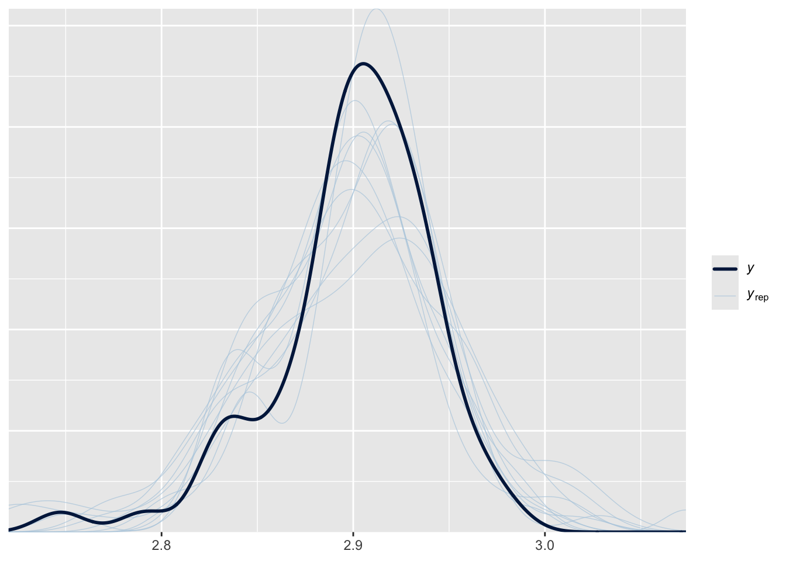

Model 1 is a fixed-effects location-scale model, which allows us to model both the mean (location) and variance (scale) of a response variable simultaneously. This is particularly useful when we suspect that the variance of the response variable may differ across groups or treatments.
2.1 Dataset overview
This dataset comes from a study by Cleasby et al. (2011), which investigated the effects of early-life food supplementation on adult morphology in a wild population of house sparrows (Passer domesticus). In particular, we focus on adult tarsus length as a measure of skeletal size. The dataset includes adult birds that either received supplemental food as chicks or not, and compares their tarsus length by treatment and sex.
2.1.1 Questions
Does early-life food supplementation increase adult size? Specifically, does it increase the average tarsus length in adulthood?
Does early-life food supplementation lead to lower variation in adult tarsus length?
Are there sex-specific effects of food supplementation? Do the effects on mean or variance differ between males and females?
Variables included
The dataset includes adult birds that either received supplemental food as chicks or not, and compares their tarsus length by treatment and sex. We use the following variables:
Sex: Biological sex of the bird (“Male” or “Female”)
AdTarsus: Adult tarsus length (mm)
Treatment: Whether the bird received food supplementation as a chick (Fed) or not (Control)
2.2 Visualise the datasets
The plot shows how adult tarsus length varies by treatment (early-life food supplementation) and sex. Boxplots summarise the central tendency and spread, while the jitter points reveal the distribution of individual values. As shown in the plot, there is a clear tendency for reduced variability in the male treatment group (Fed), suggesting that early-life food supplementation may lead to more canalised development in males.
It should be noted that we applied a log-transformation to AdTarsus to reduce skewness and stabilise residual variance. Continuous variables are often log-transformed and mean-centred, but in location-scale models, we do not standardise the predictors, as doing so would be remove interpretable variation in the scale part of the model.
# load the datasets ----dat_tarsus<-read.csv(here("data", "SparrowTarsusData.csv"), header =TRUE)#'*Added*ggplot(dat_tarsus, aes(x =Treatment, y =log(AdTarsus), fill =Sex))+geom_boxplot(outlier.shape =NA, alpha =0.5, position =position_dodge(width =0.8))+geom_jitter(aes(color =Sex), size =2, alpha =0.7, position =position_jitterdodge(jitter.width =0.2, dodge.width =0.8))+scale_fill_manual(values =c("Male"="#1f78b4", "Female"="#e31a1c"))+scale_color_manual(values =c("Male"="#1f78b4", "Female"="#e31a1c"))+labs(title ="Adult tarsus length by treatment and sex", x ="Treatment", y ="Log-transformed tarsus length")+theme_classic()+theme(legend.position ="right")
2.3 Run models and interpret results
We fit and compare two types of models to understand the structure of adult tarsus length:
Location-only model: Estimates the mean of adult tarsus length as a function of sex and early-life food supplementation (treatment).
Location-scale model: Estimates both the mean and the variability (residual dispersion) of adult tarsus length, allowing us to examine whether treatment and sex influence not only the average trait value but also its individual variation.
This approach enables us to detect subtle patterns, such as sex-specific canalisation, that may not be captured when modeling the mean alone.
## to quantify the uncertainty in parameter estimates, we computed 95% confidence intervals using the confint() function.## this function returns the lower and upper bounds for each fixed/random effect parameters. If a confidence interval does not include zero, it suggests that the corresponding predictor has a statistically significant effect (at approximately the 0.05 level).confint(model_0)# check 95%CI
We can check the residuals of the model to assess the model fit and assumptions. The Q-Q plot should show points falling along a straight line.
# | label: model0_diagnostics - model1# plot a q-q plot of residuals to visually assess the normality assumption# the data points should fail approximately along the reference lineres<-residuals(model_0)qqnorm(res)# visual check for normality of residualsqqline(res)# reference line for normal distribution
The residuals mostly follow a straight line in the Q-Q plot, but there are some deviations, particularly at the lower and upper ends. This suggests that the model may not fully capture the distribution of the data, indicating some potential issues with normality or heteroscedasticity.
Then, we fit a location-scale model.
# location-scale model ---- model_1<-glmmTMB(log(AdTarsus)~1+Sex+Treatment+Sex:Treatment, # location part dispformula =~1+Sex+Treatment+Sex:Treatment, # scale part data =dat_tarsus, family =gaussian)summary(model_1)
Now we can compare the two models to see if the location-scale model provides a better fit to the data than the location-only model. We can use the anova() function to compare the two models based on their AIC values. Alternatively, we can use the model.sel() function from the MuMIn package to compare AICc values, which is more appropriate for small sample sizes.
# compare models ----## we can use the anova() function to compare the two models of AIC anova(model_0, model_1)
## model.sel() from the MuMIn package can be used to compare AICc values.model.sel(model_0, model_1)
The results of the location-only model (Model 0) and the location-scale model (Model 1) are summarised below.
Location-only model
Term
Estimate
Std. Error
95% CI (low)
95% CI (high)
(Intercept)
2.887
0.011
2.866
2.908
SexMale
0.010
0.014
−0.016
0.037
TreatmentFed
0.010
0.014
−0.018
0.039
SexMale:TreatmentFed
0.014
0.020
−0.026
0.053
Location-scale model (location part)
Term
Estimate
Std. Error
95% CI (low)
95% CI (high)
(Intercept)
2.887
0.010
2.868
2.907
SexMale
0.010
0.013
−0.016
0.037
TreatmentFed
0.010
0.016
−0.020
0.041
SexMale:TreatmentFed
0.014
0.019
−0.024
0.051
Location-scale model (dispersion part)
Term
Estimate
Std. Error
95% CI (low)
95% CI (high)
(Intercept)
−3.279
0.189
−3.650
−2.909
SexMale
0.078
0.244
−0.400
0.557
TreatmentFed
0.272
0.255
−0.228
0.773
SexMale:TreatmentFed
−0.951
0.361
−1.659
−0.242
Of course, we can also fit the location–scale model using the brms! Here we show how to fit the same model as above using brms. The results should be similar to those obtained with glmmTMB.
# specify the model using bf()formula1<-bf(log(AdTarsus)~1+Sex+Treatment+Sex:Treatment, sigma =~1+Sex+Treatment+Sex:Treatment)# generate default priors based on the formula and datadefault_priors<-default_prior(formula1, data =dat_tarsus, family =gaussian()# default link function for gaussian family )# fit the model - you can change N of iter, warmup, thin, and also chains.# adapt_delta = 0.95 helps to reduce divergent transitionssystem.time(brms_g1<-brm(formula1, data =dat_tarsus, family =gaussian(), prior =default_priors, iter =2000, warmup =1000, thin =1, chains =2, control =list(adapt_delta =0.95)))summary(brms_g1)
Family: gaussian
Links: mu = identity; sigma = log
Formula: log(AdTarsus) ~ 1 + Sex + Treatment + Sex:Treatment
sigma ~ 1 + Sex + Treatment + Sex:Treatment
Data: dat_tarsus (Number of observations: 64)
Draws: 2 chains, each with iter = 2000; warmup = 1000; thin = 1;
total post-warmup draws = 2000
Regression Coefficients:
Estimate Est.Error l-95% CI u-95% CI Rhat Bulk_ESS
Intercept 2.89 0.01 2.86 2.91 1.00 1162
sigma_Intercept -3.19 0.21 -3.56 -2.72 1.00 1041
SexMale 0.01 0.01 -0.02 0.04 1.00 994
TreatmentFed 0.01 0.02 -0.03 0.05 1.00 795
SexMale:TreatmentFed 0.01 0.02 -0.03 0.06 1.00 711
sigma_SexMale 0.04 0.27 -0.52 0.56 1.00 1025
sigma_TreatmentFed 0.24 0.28 -0.30 0.77 1.00 917
sigma_SexMale:TreatmentFed -0.87 0.41 -1.66 -0.01 1.00 890
Tail_ESS
Intercept 1130
sigma_Intercept 1202
SexMale 1040
TreatmentFed 756
SexMale:TreatmentFed 865
sigma_SexMale 1079
sigma_TreatmentFed 1082
sigma_SexMale:TreatmentFed 1050
Draws were sampled using sampling(NUTS). For each parameter, Bulk_ESS
and Tail_ESS are effective sample size measures, and Rhat is the potential
scale reduction factor on split chains (at convergence, Rhat = 1).
First, you need to check the effective sample size (**_ESS) and Rhat values. ESS should be greater than 400 (Vehtari et al. 2021), and \(\hat{R}\) should be close to 1.0 (ideally < 1.01). If these conditions are not met, you may need to increase the number of iterations or adjust the model specification.
Then, we can check the output. It is divided into two parts: Location (mean) part (how the average changes) and Scale (dispersion) part (how the variability changes). In Gaussian data, the scale part is \(\sigma\)
Here is the explanation of the output table:
Estimate: posterior mean
Est.Err: standard error of posterior mean
l-95% CI and u-95% CI: Lower and upper bounds of the 95% credible interval (range where the true value lies with 95% probability, given the model and data)
Rhat: Convergence diagnostic. Should be close to 1.00. If >1.01, convergence may be poor.
Bulk_ESS and Tail_ESS: Effective sample sizes for bulk and tail distributions. Should be >400 for reliable estimates (larger is better).
We evaluated model fit using posterior predictive checks implemented in the brms functionpp_check(). This procedure generates replicated datasets from the posterior distribution of the fitted model and compares them with the observed data. If the model provides an adequate description of the data, the replicated distributions should resemble the observed distribution in both central tendency and variability.
pp_check(brms_g1)# posterior predictive check

Posterior predictive checks indicated that the Gaussian location–scale model adequately reproduced the observed distribution of log(AdTarsus). In the plots, the dark line shows the observed data, while the lighter lines represent simulated datasets drawn from the posterior predictive distribution. Close overlap between observed and replicated distributions indicates that the model reproduces the data well. Deviations suggest areas where the model fails to capture features of the data (e.g. heavy tails, skewness, or multimodality).
Now, you can find the results from glmmTMB and brms are very close to each other, but there are some differences in the estimates and standard errors. This came from the different estimation methods used by the two packages. glmmTMB uses maximum likelihood estimation, while brms uses Bayesian estimation with Markov Chain Monte Carlo (MCMC) sampling.
The figure visualises results from the glmmTMB and brms models shown on the link scale.
# TODO: change colours and maybe set figure size# glmmTMB ----# Extract estimated marginal means for location part# returns predicted log(AdTarsus) by Sex*Treatmentemm_mu_link<-emmeans(model_1, ~Sex*Treatment, component ="cond", type ="link")df_mu_link<-as.data.frame(emm_mu_link)%>%rename( mean_log =emmean, # estimated log(mean AdTarsus) lwr =lower.CL, # lower 95% CI (log scale) upr =upper.CL# upper 95% CI (log scale))# Extract estimated marginal means for scale part emm_sigma_link<-emmeans(model_1, ~Sex*Treatment, component ="disp", type ="link")df_sigma_link<-as.data.frame(emm_sigma_link)%>%rename( log_sigma =emmean, # estimated log(sigma) lwr =lower.CL, # lower 95% CI (log scale) upr =upper.CL# upper 95% CI (log scale))pos<-position_dodge(width =0.4)# Plot predicted log(AdTarsus) ± 95% CI for Sex*Treatmentp_mean_link<-ggplot(df_mu_link, aes(x =Sex, y =mean_log, color =Treatment))+geom_point(position =pos, size =3)+geom_errorbar(aes(ymin =lwr, ymax =upr), position =pos, width =0.15)+labs( title ="Location", x ="Sex", y =" log(AdTarsus)")+scale_y_continuous(limits =c(2.8, 3.0), breaks =seq(2.8, 3.0, by =0.1))+theme_classic()# Plot predicted log(sigma) ± 95% CI for Sex*Treatmentp_sigma_link<-ggplot(df_sigma_link, aes(x =Sex, y =log_sigma, color =Treatment))+geom_point(position =pos, size =3)+geom_errorbar(aes(ymin =lwr, ymax =upr), position =pos, width =0.15)+labs( title ="Scale", x ="Sex", y ="log(sigma)")+scale_y_continuous(limits =c(-4.5, -2.5), breaks =seq(-4.5, -2.5, by =0.5))+theme_classic()# scale_data <- log(sqrt(residuals(model_1)^2)) # this is the residual - we can add the figure, but it does not come from the modelp_glmmTMB_m1<-p_mean_link+p_sigma_link# brms ----d<-dat_tarsus%>%distinct(Sex, Treatment)%>%arrange(Sex, Treatment)draws_link<-tidybayes::linpred_draws(brms_g1, newdata =d, re_formula =NA, dpar =TRUE, transform =FALSE)%>%transmute(Sex, Treatment, .draw, mu =.linpred, # Location on link scale log_sigma =sigma# Scale on link scale (already log(sigma)))%>%tidyr::pivot_longer(mu:log_sigma, names_to ="param", values_to ="value")# Location ----p_loc<-draws_link%>%filter(param=="mu")%>%ggplot(aes(x =Sex, y =value, fill =Treatment))+geom_violin(width =0.85, trim =FALSE, alpha =0.6, color =NA, position =position_dodge(0.6))+stat_pointinterval(aes(color =Treatment), position =position_dodge(width =0.6), .width =0.95, size =0.8)+scale_y_continuous(limits =c(2.8, 3.0), breaks =seq(2.8,3.0, by =0.1))+labs(title ="Location", x ="Sex", y ="log(AdTarsus)")+theme_classic()+theme(legend.position ="right")# Scale ----p_scl<-draws_link%>%filter(param=="log_sigma")%>%ggplot(aes(x =Sex, y =value, fill =Treatment))+geom_violin(width =0.85, trim =FALSE, alpha =0.6, color =NA, position =position_dodge(0.6))+tidybayes::stat_pointinterval(aes(color =Treatment), position =position_dodge(width =0.6), .width =0.95, size =0.8)+labs(title ="Scale", x ="Sex", y ="log(sigma)")+theme_classic()+theme(legend.position ="right")p_brms_m1<-p_loc+p_scl# combine ----(p_glmmTMB_m1/p_brms_m1)+plot_annotation(title ="top: glmmTMB / bottom: brms")
Location (mean) part: The glmmTMB panel (top) shows estimated marginal means (EMMs) with 95% confidence intervals, represented as points with error bars, obtained via emmeans. The brms panel (bottom) displays posterior samples drawn with tidybayes::linpred_draws() as violin plots, overlaid with the posterior median and 95% credible intervals. Thus, the top panel presents point estimates with symmetric CIs based on normal approximation, while the bottom panel visualises the full posterior distribution, including its shape (skewness and tail thickness). Both use type = "link", so the vertical axis is aligned on the log(AdTarsus) link scale.
Scale (variance) part: The plots from glmmTMB model display Estimated marginal means of log(sigma) with 95% confidence intervals. the plots from brms show posterior distributions, medians, and 95% credible intervals for log(sigma).
Interpretation of uncertainty intervals: A confidence interval (CI) has a frequentist interpretation: if the data were replicated infinitely, 95% of such intervals would contain the true value. A credible interval (CrI) has a Bayesian interpretation: given the data and the prior, there is a 95% probability that the true value lies within the interval.
In principle, raw data could also be plotted for both the location and scale parts (e.g., observed values or residual variability), but these would not represent model-derived estimates. Therefore, only group-level estimates and their uncertainty are shown here.
2.3.2 Comparison of location-only model and location-scale model
There was no significant difference in the fit of the two models. location-scale model (model 1) had a lower AICc (-221.0) than location-only model (model 0: -220.0), with an AIC weight of 0.662 vs. 0.338 (see Model comparison tab).
Note on AIC vs AICc:
While both AIC (Akaike Information Criterion) and AICc (AIC with correction) assess model fit by balancing goodness of fit and model complexity, AICc includes an additional correction for small sample sizes. When the sample size is limited relative to the number of estimated parameters, AICc is generally preferred because it reduces the risk of overfitting. As a result, AIC and AICc values may differ slightly, and model rankings based on them may also vary.
2.3.3 Interpretation of location-scale model :
2.3.3.1 How to back-transflrm the log-link scale to natural scale?
The models were fitted with different link functions for the location and scale submodels. Estimates were therefore back-transformed before biological interpretation. For the location part, the link was identity, so predicted values of log(AdTarsus) were exponentiated to return to millimetres of adult tarsus length. For the scale part, the link was logarithmic, so estimates of log(sigma) were exponentiated to obtain the residual standard deviation (sigma) on the original scale. To facilitate interpretation, group differences in means are expressed as percentage changes relative to the control females, and group differences in residual variation are expressed as proportional changes in σ (i.e. percentage reduction or increase compared with the reference group).
For example…
Location part
females with control: exp(2.89) = 17.99
males with control: exp(2.89 + 0.01) = 18.17
if we want to know the percentage difference between females vs males with control… exp(0.01) - 1 = +1.0%
males with control: log(sigma) = exp(-3.19 + 0.04) = 0.043
2.3.3.2 Biological meanings
Location (mean) part:
Average adult tarsus length was around 18 mm in the control females (back-transformed: SexFemale; \(\beta_{[\text{intercept}]}^{(l)}\) = -3.28). Neither food supplementation nor sex produced more than ~2-4% differences in mean length: males were estimated to be −1.6% to +3.7% longer than females, supplemented birds were −2.0% to +4.2% longer than controls, and supplemented males were −2.3% to +5.2% longer than control males. These small and uncertain differences indicate that food supplementation did not meaningfully alter average adult tarsus length.
Scale (dispersion) part: - There was a significant negative interaction between sex and treatment (SexMale:TreatmentFed; \(\beta_{[\text{interaction}]}^{(s)} = -0.95\), 95% CI = -1.66, -0.24 in glmmTMB). Back-transformation indicated that the residual standard deviation in supplemented males was 61.3% lower than that in the baseline group (non-supplemented females; 95% CI: −81.0% to −21.3%) and 58.2% lower than in non-supplemented males. Thus, early-life food supplementation substantially reduced variation in adult tarsus length among males, resulting in more uniform growth. Neither sex nor treatment alone had a significant effect on variance; the reduction was specific to supplemented males.
2.4 Conclusion
Q1. Does early-life food supplementation increase adult size? Specifically, does it increase the average tarsus length in adulthood?
Answer: No clear evidence. In both the location-only and location-scale models, the effect of feeding (treatment) on the mean adult tarsus length was small and not statistically significant. This suggests that food supplementation did not lead to a measurable increase in average tarsus length.
Q2. Does early-life food supplementation lead to lower variation in adult tarsus length??
Answer: Partially yes - especially in males. The location-scale model revealed a significant reduction in variance in the male treatment group (Fed) compared to the male control group. This was supported by a significant negative interaction between sex and treatment in the dispersion model. In contrast, females showed no significant difference in variance between treatment groups. This indicates that early-life food supplementation reduced size variation only in males, not across all individuals.
Q3. Are there sex-specific effects of food supplementation? Do the effects on mean or variance differ between males and females?
Answer: Yes. The male treatment group (Fed) showed significantly reduced variance in adult tarsus length compared to the control group (Control), while females did not show a significant difference in variance between treatment groups. There were no significant differences in mean tarsus length between sexes or treatments. This pattern suggests that early-life food supplementation may canalise trait development in males, leading to more uniform adult morphology under favourable nutritional conditions.
Although the model comparison did not show a strong difference in overall fit between the location-only and location-scale models (\(\Delta AICc = 1.3\)), the location-scale model revealed an important and previously overlooked pattern:
Early-life food supplementation significantly reduced trait variance in males, but not in females.
This result would have been missed in a traditional location-only analysis that focuses solely on mean differences. By modeling both the mean and the dispersion, we were able to detect a sex-specific canalisation effect, highlighting the value of using location-scale models when investigating trait variability and developmental plasticity.
Source Code
---title: "Fixed-effects location–scale model (model 1)"---```{r}#| label: load_packages#| echo: false# Load required packagespacman::p_load(## data manipulation dplyr, tibble, tidyverse, broom, broom.mixed,## model fitting ape, arm, brms, broom.mixed, cmdstanr, emmeans, glmmTMB, MASS, phytools, rstan, TreeTools,## model checking and evaluation DHARMa, loo, MuMIn, parallel, ggeffects,## visualisation bayesplot, ggplot2, patchwork, tidybayes,## reporting and utilities gt, here, kableExtra, knitr)```Model 1 is a fixed-effects location-scale model, which allows us to model both the mean (location) and variance (scale) of a response variable simultaneously. This is particularly useful when we suspect that the variance of the response variable may differ across groups or treatments.## Dataset overviewThis dataset comes from a study by [Cleasby et al. (2011)](https://doi.org/10.1186/1756-0500-4-431), which investigated the effects of early-life food supplementation on adult morphology in a wild population of house sparrows (*Passer domesticus*). In particular, we focus on adult tarsus length as a measure of skeletal size. The dataset includes adult birds that either received supplemental food as chicks or not, and compares their tarsus length by treatment and sex.### Questions1. **Does early-life food supplementation increase adult size? Specifically, does it increase the average tarsus length in adulthood?**2. **Does early-life food supplementation lead to lower variation in adult tarsus length?**3. **Are there sex-specific effects of food supplementation? Do the effects on mean or variance differ between males and females?****Variables included**The dataset includes adult birds that either received supplemental food as chicks or not, and compares their tarsus length by treatment and sex. We use the following variables:::: {.callout-note appearance="simple" icon="false"}- `Sex`: Biological sex of the bird (“Male” or “Female”)- `AdTarsus`: Adult tarsus length (mm)- `Treatment`: Whether the bird received food supplementation as a chick (`Fed`) or not (`Control`):::## Visualise the datasetsThe plot shows how adult tarsus length varies by treatment (early-life food supplementation) and sex. Boxplots summarise the central tendency and spread, while the jitter points reveal the distribution of individual values. As shown in the plot, there is a clear tendency for reduced variability in the **male treatment group** (`Fed`), suggesting that early-life food supplementation may lead to more canalised development in males.It should be noted that we applied a log-transformation to `AdTarsus` to reduce skewness and stabilise residual variance. Continuous variables are often log-transformed and mean-centred, but in location-scale models, we do not standardise the predictors, as doing so would be remove interpretable variation in the scale part of the model.```{r}#| label: show_data - model1#| fig-width: 8#| fig-height: 6# load the datasets ----dat_tarsus <-read.csv(here("data", "SparrowTarsusData.csv"), header =TRUE)#'*Added*ggplot(dat_tarsus, aes(x = Treatment, y =log(AdTarsus), fill = Sex)) +geom_boxplot(outlier.shape =NA, alpha =0.5, position =position_dodge(width =0.8)) +geom_jitter(aes(color = Sex),size =2, alpha =0.7,position =position_jitterdodge(jitter.width =0.2, dodge.width =0.8) ) +scale_fill_manual(values =c("Male"="#1f78b4", "Female"="#e31a1c")) +scale_color_manual(values =c("Male"="#1f78b4", "Female"="#e31a1c")) +labs(title ="Adult tarsus length by treatment and sex",x ="Treatment", y ="Log-transformed tarsus length") +theme_classic() +theme(legend.position ="right")```## Run models and interpret resultsWe fit and compare two types of models to understand the structure of adult tarsus length:- Location-only model: Estimates the mean of adult tarsus length as a function of sex and early-life food supplementation (treatment).- Location-scale model: Estimates both the mean and the variability (residual dispersion) of adult tarsus length, allowing us to examine whether treatment and sex influence not only the average trait value but also its individual variation.This approach enables us to detect subtle patterns, such as sex-specific canalisation, that may not be captured when modeling the mean alone.### Model fitting::: panel-tabset## Location modelFirst, we fit a location-only model as the baseline model.```{r}#| label: model_fitting1 - gaussian model1# location-only model ----model_0 <-glmmTMB(log(AdTarsus) ~1+ Sex + Treatment + Sex:Treatment,data = dat_tarsus, family = gaussian)summary(model_0)## to quantify the uncertainty in parameter estimates, we computed 95% confidence intervals using the confint() function.## this function returns the lower and upper bounds for each fixed/random effect parameters. If a confidence interval does not include zero, it suggests that the corresponding predictor has a statistically significant effect (at approximately the 0.05 level).confint(model_0) # check 95%CI```## Residual diagnosticsWe can check the residuals of the model to assess the model fit and assumptions. The Q-Q plot should show points falling along a straight line.```{r}# | label: model0_diagnostics - model1# plot a q-q plot of residuals to visually assess the normality assumption# the data points should fail approximately along the reference lineres <-residuals(model_0)qqnorm(res) # visual check for normality of residualsqqline(res) # reference line for normal distribution```The residuals mostly follow a straight line in the Q-Q plot, but there are some deviations, particularly at the lower and upper ends. This suggests that the model may not fully capture the distribution of the data, indicating some potential issues with normality or heteroscedasticity.## Location-scale modelThen, we fit a location-scale model.```{r}#| label: model_fitting2 - model1# location-scale model ---- model_1 <-glmmTMB(log(AdTarsus) ~1+ Sex + Treatment + Sex:Treatment, # location partdispformula =~1+ Sex + Treatment + Sex:Treatment, # scale partdata = dat_tarsus, family = gaussian )summary(model_1)confint(model_1) ```## Model comparisonNow we can compare the two models to see if the location-scale model provides a better fit to the data than the location-only model. We can use the `anova()` function to compare the two models based on their AIC values. Alternatively, we can use the `model.sel()` function from the `MuMIn` package to compare AICc values, which is more appropriate for small sample sizes.```{r}#| label: model_comparison - model1# compare models ----## we can use the anova() function to compare the two models of AIC anova(model_0, model_1)## model.sel() from the MuMIn package can be used to compare AICc values.model.sel(model_0, model_1)```## Summary of model resultsThe results of the location-only model (Model 0) and the location-scale model (Model 1) are summarised below.```{r}#| echo: false#| label: model0_results# Location-only model (Model 0) ----## extract fixed effect estimates/95CIs from the modelcoefs_0 <-summary(model_0)$coefficients$condconf_0 <-confint(model_0)## remove the "cond." prefix from row names to match with coefficient names, ## keep only the rows that match the location model term, and match the row order between coefficients and confidence intervalsrownames(conf_0) <-gsub("^cond\\.", "", rownames(conf_0))conf_0 <- conf_0[rownames(conf_0) %in%rownames(coefs_0), ]match_0 <-match(rownames(coefs_0), rownames(conf_0))## create a data frame results_0 <-data.frame(Term =rownames(coefs_0),Estimate = coefs_0[, "Estimate"],StdError = coefs_0[, "Std. Error"],`2.5%`= conf_0[match_0, "2.5 %"],`97.5%`= conf_0[match_0, "97.5 %"])## rename 95%CI columns to avoid issues with special characters in column names colnames(results_0)[which(names(results_0) =="X2.5.")] <-"CI_low"colnames(results_0)[which(names(results_0) =="X97.5.")] <-"CI_high"## display results ----gt(results_0) %>%tab_header(title ="Location-only model") %>%fmt_number(columns =everything(), decimals =3) %>%cols_label(Term ="Term",Estimate ="Estimate",StdError ="Std. Error",CI_low ="95% CI (low)",CI_high ="95% CI (high)" ) %>%cols_align(align ="center", columns =everything())``````{r}#| label: model1_results#| echo: false# Location-scale model (Model 1) ----## extract fixed effect estimates/95%CIs from the modelsummary_1 <-summary(model_1)conf_1 <-confint(model_1)# location part ----coefs_1_loc <- summary_1$coefficients$condconf_1_loc <- conf_1[grep("^cond", rownames(conf_1)), ]rownames(conf_1_loc) <-gsub("^cond\\.", "", rownames(conf_1_loc))conf_1_loc <- conf_1_loc[rownames(conf_1_loc) %in%rownames(coefs_1_loc), ]match_loc <-match(rownames(coefs_1_loc), rownames(conf_1_loc))results_1_loc <-data.frame(Term =rownames(coefs_1_loc),Estimate = coefs_1_loc[, "Estimate"],StdError = coefs_1_loc[, "Std. Error"],CI_low = conf_1_loc[match_loc, "2.5 %"],CI_high = conf_1_loc[match_loc, "97.5 %"])colnames(results_1_loc)[which(names(results_1_loc) =="X2.5.")] <-"CI_low"colnames(results_1_loc)[which(names(results_1_loc) =="X97.5.")] <-"CI_high"# dispersion part ----coefs_1_disp <- summary_1$coefficients$dispconf_1_disp <- conf_1[grep("^disp", rownames(conf_1)), ]rownames(conf_1_disp) <-gsub("^disp\\.", "", rownames(conf_1_disp))conf_1_disp <- conf_1_disp[rownames(conf_1_disp) %in%rownames(coefs_1_disp), ]match_disp <-match(rownames(coefs_1_disp), rownames(conf_1_disp))results_1_disp <-data.frame(Term =rownames(coefs_1_disp),Estimate = coefs_1_disp[, "Estimate"],StdError = coefs_1_disp[, "Std. Error"],CI_low = conf_1_disp[match_disp, "2.5 %"],CI_high = conf_1_disp[match_disp, "97.5 %"])colnames(results_1_loc)[which(names(results_1_disp) =="X2.5.")] <-"CI_low"colnames(results_1_loc)[which(names(results_1_disp) =="X97.5.")] <-"CI_high"# display results ----gt(results_1_loc) %>%tab_header(title ="Location-scale model (location part)") %>%fmt_number(columns =everything(), decimals =3) %>%cols_label(Term ="Term",Estimate ="Estimate",StdError ="Std. Error",CI_low ="95% CI (low)",CI_high ="95% CI (high)" ) %>%cols_align(align ="center", columns =everything())gt(results_1_disp) %>%tab_header(title ="Location-scale model (dispersion part)") %>%fmt_number(columns =everything(), decimals =3) %>%cols_label(Term ="Term",Estimate ="Estimate",StdError ="Std. Error",CI_low ="95% CI (low)",CI_high ="95% CI (high)" ) %>%cols_align(align ="center", columns =everything())```## bonus - `brms`Of course, we can also fit the location–scale model using the `brms`! Here we show how to fit the same model as above using `brms`. The results should be similar to those obtained with `glmmTMB`.```{r}#| label: model_fitting3 - brms model1#| eval: false# specify the model using bf()formula1 <-bf(log(AdTarsus) ~1+ Sex + Treatment + Sex:Treatment, sigma =~1+ Sex + Treatment + Sex:Treatment)# generate default priors based on the formula and datadefault_priors <-default_prior( formula1,data = dat_tarsus, family =gaussian() # default link function for gaussian family )# fit the model - you can change N of iter, warmup, thin, and also chains.# adapt_delta = 0.95 helps to reduce divergent transitionssystem.time( brms_g1 <-brm(formula1,data = dat_tarsus, family =gaussian(), prior = default_priors, iter =2000, warmup =1000, thin =1, chains =2, control =list(adapt_delta =0.95) ))summary(brms_g1)``````{r}#| label: model_result - brms model1 (SN)#| echo: falsebrms_g1 <-readRDS(here("Rdata", "brms_SN1.rds"))summary(brms_g1)```First, you need to check the effective sample size (`**_ESS`) and `Rhat` values. ESS should be greater than **400** ([Vehtari et al. 2021](https://doi.org/10.1214/20-BA1221)), and $\hat{R}$ should be close to **1.0** (ideally \< 1.01). If these conditions are not met, you may need to increase the number of iterations or adjust the model specification.Then, we can check the output. It is divided into two parts: **Location (mean) part** (how the average changes) and **Scale (dispersion) part** (how the variability changes). In Gaussian data, the scale part is $\sigma$Here is the explanation of the output table:------------------------------------------------------------------------`Estimate`: posterior mean`Est.Err`: standard error of posterior mean`l-95% CI` and `u-95% CI`: Lower and upper bounds of the 95% **credible interval** (range where the true value lies with 95% probability, given the model and data)`Rhat`: Convergence diagnostic. Should be close to 1.00. If \>1.01, convergence may be poor.`Bulk_ESS` and `Tail_ESS`: Effective sample sizes for bulk and tail distributions. Should be \>400 for reliable estimates (larger is better).------------------------------------------------------------------------We evaluated model fit using posterior predictive checks implemented in the brms function` pp_check()`. This procedure generates replicated datasets from the posterior distribution of the fitted model and compares them with the observed data. If the model provides an adequate description of the data, the replicated distributions should resemble the observed distribution in both central tendency and variability.```{r}pp_check(brms_g1) # posterior predictive check```Posterior predictive checks indicated that the Gaussian location–scale model adequately reproduced the observed distribution of `log(AdTarsus)`. In the plots, the dark line shows the observed data, while the lighter lines represent simulated datasets drawn from the posterior predictive distribution. Close overlap between observed and replicated distributions indicates that the model reproduces the data well. Deviations suggest areas where the model fails to capture features of the data (e.g. heavy tails, skewness, or multimodality).*****Now, you can find the results from `glmmTMB` and `brms` are very close to each other, but there are some differences in the estimates and standard errors. This came from the different estimation methods used by the two packages. `glmmTMB` uses maximum likelihood estimation, while `brms` uses Bayesian estimation with Markov Chain Monte Carlo (MCMC) sampling.## Result figuresThe figure visualises results from the `glmmTMB` and `brms` models shown on the link scale.```{r}#| label: result_figure_model1# TODO: change colours and maybe set figure size# glmmTMB ----# Extract estimated marginal means for location part# returns predicted log(AdTarsus) by Sex*Treatmentemm_mu_link <-emmeans(model_1, ~ Sex * Treatment,component ="cond", type ="link")df_mu_link <-as.data.frame(emm_mu_link) %>%rename(mean_log = emmean, # estimated log(mean AdTarsus)lwr = lower.CL, # lower 95% CI (log scale)upr = upper.CL # upper 95% CI (log scale) )# Extract estimated marginal means for scale part emm_sigma_link <-emmeans(model_1, ~ Sex * Treatment,component ="disp", type ="link")df_sigma_link <-as.data.frame(emm_sigma_link) %>%rename(log_sigma = emmean, # estimated log(sigma)lwr = lower.CL, # lower 95% CI (log scale)upr = upper.CL # upper 95% CI (log scale) )pos <-position_dodge(width =0.4)# Plot predicted log(AdTarsus) ± 95% CI for Sex*Treatmentp_mean_link <-ggplot(df_mu_link, aes(x = Sex, y = mean_log, color = Treatment)) +geom_point(position = pos, size =3) +geom_errorbar(aes(ymin = lwr, ymax = upr), position = pos, width =0.15) +labs(title ="Location",x ="Sex",y =" log(AdTarsus)" ) +scale_y_continuous(limits =c(2.8, 3.0), breaks =seq(2.8, 3.0, by =0.1) ) +theme_classic()# Plot predicted log(sigma) ± 95% CI for Sex*Treatmentp_sigma_link <-ggplot(df_sigma_link, aes(x = Sex, y = log_sigma, color = Treatment)) +geom_point(position = pos, size =3) +geom_errorbar(aes(ymin = lwr, ymax = upr), position = pos, width =0.15) +labs(title ="Scale",x ="Sex",y ="log(sigma)" ) +scale_y_continuous(limits =c(-4.5, -2.5), breaks =seq(-4.5, -2.5, by =0.5) ) +theme_classic()# scale_data <- log(sqrt(residuals(model_1)^2)) # this is the residual - we can add the figure, but it does not come from the modelp_glmmTMB_m1 <- p_mean_link + p_sigma_link# brms ----d <- dat_tarsus %>%distinct(Sex, Treatment) %>%arrange(Sex, Treatment)draws_link <- tidybayes::linpred_draws( brms_g1, newdata = d, re_formula =NA, dpar =TRUE, transform =FALSE) %>%transmute( Sex, Treatment, .draw,mu = .linpred, # Location on link scalelog_sigma = sigma # Scale on link scale (already log(sigma)) ) %>% tidyr::pivot_longer(mu:log_sigma, names_to ="param", values_to ="value")# Location ----p_loc <- draws_link %>%filter(param =="mu") %>%ggplot(aes(x = Sex, y = value, fill = Treatment)) +geom_violin(width =0.85, trim =FALSE, alpha =0.6,color =NA, position =position_dodge(0.6)) +stat_pointinterval(aes(color = Treatment),position =position_dodge(width =0.6),.width =0.95, size =0.8) +scale_y_continuous(limits =c(2.8, 3.0), breaks =seq(2.8,3.0, by =0.1) ) +labs(title ="Location", x ="Sex", y ="log(AdTarsus)") +theme_classic() +theme(legend.position ="right")# Scale ----p_scl <- draws_link %>%filter(param =="log_sigma") %>%ggplot(aes(x = Sex, y = value, fill = Treatment)) +geom_violin(width =0.85, trim =FALSE, alpha =0.6,color =NA, position =position_dodge(0.6)) + tidybayes::stat_pointinterval(aes(color = Treatment),position =position_dodge(width =0.6),.width =0.95, size =0.8) +labs(title ="Scale", x ="Sex", y ="log(sigma)") +theme_classic() +theme(legend.position ="right")p_brms_m1 <- p_loc + p_scl# combine ----(p_glmmTMB_m1 / p_brms_m1) +plot_annotation(title ="top: glmmTMB / bottom: brms")```- **Location (mean) part**: The `glmmTMB` panel (top) shows estimated marginal means (EMMs) with 95% confidence intervals, represented as points with error bars, obtained via `emmeans`. The brms panel (bottom) displays posterior samples drawn with `tidybayes::linpred_draws()` as violin plots, overlaid with the posterior median and 95% credible intervals. Thus, the top panel presents point estimates with symmetric CIs based on normal approximation, while the bottom panel visualises the full posterior distribution, including its shape (skewness and tail thickness). Both use `type = "link"`, so the vertical axis is aligned on the `log(AdTarsus)` link scale.- **Scale (variance) part**: The plots from `glmmTMB` model display Estimated marginal means of log(sigma) with 95% confidence intervals. the plots from `brms` show posterior distributions, medians, and 95% credible intervals for log(sigma).- **Interpretation of uncertainty intervals**: A confidence interval (CI) has a frequentist interpretation: if the data were replicated infinitely, 95% of such intervals would contain the true value. A credible interval (CrI) has a Bayesian interpretation: given the data and the prior, there is a 95% probability that the true value lies within the interval.In principle, raw data could also be plotted for both the location and scale parts (e.g., observed values or residual variability), but these would not represent model-derived estimates. Therefore, only group-level estimates and their uncertainty are shown here.:::### Comparison of location-only model and location-scale modelThere was no significant difference in the fit of the two models. location-scale model (model 1) had a lower AICc (-221.0) than location-only model (model 0: -220.0), with an AIC weight of 0.662 vs. 0.338 (see `Model comparison` tab). ::: {.callout-note appearance="simple" icon="false"}## Note on `AIC` vs `AICc`:While both `AIC` (Akaike Information Criterion) and `AICc` (AIC with correction) assess model fit by balancing goodness of fit and model complexity, AICc includes an additional correction for small sample sizes. When the sample size is limited relative to the number of estimated parameters, AICc is generally preferred because it reduces the risk of overfitting. As a result, AIC and AICc values may differ slightly, and model rankings based on them may also vary.:::### Interpretation of location-scale model :#### How to back-transflrm the log-link scale to natural scale?The models were fitted with different link functions for the location and scale submodels. Estimates were therefore back-transformed before biological interpretation. For the location part, the link was identity, so predicted values of `log(AdTarsus)` were exponentiated to return to millimetres of adult tarsus length. For the scale part, the link was logarithmic, so estimates of log(sigma) were exponentiated to obtain the residual standard deviation (sigma) on the original scale. To facilitate interpretation, group differences in means are expressed as percentage changes relative to the control females, and group differences in residual variation are expressed as proportional changes in σ (i.e. percentage reduction or increase compared with the reference group).For example…1. Location part- females with control: `exp(2.89) = 17.99`- males with control: `exp(2.89 + 0.01) = 18.17` \ if we want to know the percentage difference between females vs males with control… `exp(0.01) - 1 = +1.0%`- females with fed: `exp(2.89 + 0.01) = 18.17`- males with fed: `exp(2.89 + 0.01 + 0.01 + 0.01) = 18.54`2. Scale part- males with control: log(sigma) = `exp(-3.19 + 0.04) = 0.043`#### Biological meanings**Location (mean) part:**- Average adult tarsus length was around 18 mm in the control females (back-transformed: `SexFemale`; $\beta_{[\text{intercept}]}^{(l)}$ = -3.28). Neither food supplementation nor sex produced more than \~2-4% differences in mean length: males were estimated to be −1.6% to +3.7% longer than females, supplemented birds were −2.0% to +4.2% longer than controls, and supplemented males were −2.3% to +5.2% longer than control males. These small and uncertain differences indicate that food supplementation did not meaningfully alter average adult tarsus length.**Scale (dispersion) part:** <!-- Added --> - There was a significant negative interaction between sex and treatment (`SexMale:TreatmentFed`; $\beta_{[\text{interaction}]}^{(s)} = -0.95$, 95% CI = -1.66, -0.24 in `glmmTMB`). Back-transformation indicated that the residual standard deviation in supplemented males was 61.3% lower than that in the baseline group (non-supplemented females; 95% CI: −81.0% to −21.3%) and 58.2% lower than in non-supplemented males. Thus, early-life food supplementation substantially reduced variation in adult tarsus length among males, resulting in more uniform growth. Neither sex nor treatment alone had a significant effect on variance; the reduction was specific to supplemented males.## Conclusion**Q1. Does early-life food supplementation increase adult size? Specifically, does it increase the average tarsus length in adulthood?**Answer: No clear evidence. In both the location-only and location-scale models, the effect of feeding (treatment) on the mean adult tarsus length was small and not statistically significant. This suggests that food supplementation did not lead to a measurable increase in average tarsus length.**Q2. Does early-life food supplementation lead to lower variation in adult tarsus length??**Answer: Partially yes - especially in males. The location-scale model revealed a significant reduction in variance in the male treatment group (Fed) compared to the male control group. This was supported by a significant negative interaction between sex and treatment in the dispersion model. In contrast, females showed no significant difference in variance between treatment groups. This indicates that early-life food supplementation reduced size variation only in males, not across all individuals.**Q3. Are there sex-specific effects of food supplementation? Do the effects on mean or variance differ between males and females?**Answer: Yes. The male treatment group (`Fed`) showed significantly reduced variance in adult tarsus length compared to the control group `(Control)`, while females did not show a significant difference in variance between treatment groups. There were no significant differences in mean tarsus length between sexes or treatments. This pattern suggests that early-life food supplementation may canalise trait development in males, leading to more uniform adult morphology under favourable nutritional conditions.------------------------------------------------------------------------Although the model comparison did not show a strong difference in overall fit between the location-only and location-scale models ($\Delta AICc = 1.3$), the location-scale model revealed an important and previously overlooked pattern:*Early-life food supplementation significantly reduced trait variance in males, but not in females.*This result would have been missed in a traditional location-only analysis that focuses solely on mean differences. By modeling both the mean and the dispersion, we were able to detect a sex-specific canalisation effect, highlighting the value of using location-scale models when investigating trait variability and developmental plasticity.